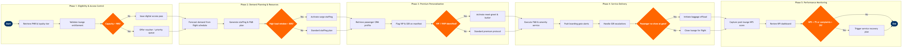

| Step | L4 Step Name | KPI / Target | Pain Point / Risk | Gate |
|---|---|---|---|---|
| 1.1 | Retrieve passenger PNR and loyalty tier status | Access verification time < 30 seconds per passenger | Altéa tier-lookup latency spikes during irregular operations (IRROP) can queue 20+ passengers at peak departure banks, degrading premium brand perception | |
| 1.2 | Validate lounge entitlement against fare and tier | Entitlement accuracy rate ≥ 99.5% (no wrongful denial or admission) | Misalignment between ATPCO fare class entitlement rules and Comarch loyalty tier tables causes wrongful denials for premium codeshare passengers not in airline's own PSS | |
| 1.3 | Check real-time lounge occupancy vs. capacity cap | Lounge occupancy maintained at ≤ 90% of rated capacity during peak banks | SITA AMS occupancy sensors in third-party contract lounges (e.g. airport operator lounges) are not integrated, requiring manual headcounts and creating data lag of 5–10 minutes | ⚠ |
| 1.4 | Issue digital lounge access pass or redirect passenger | Guest satisfaction with access process ≥ 4.2 / 5.0 (post-visit survey) | No dynamic overbooking buffer in Altéa lounge module — capacity denial is binary, leading to complaints when eligible passengers are turned away 1–2 seats below hard cap | |
| 2.1 | Forecast lounge demand from departure schedule | Forecast accuracy within ± 10% of actual peak occupancy | SkyWORKS schedule feed does not include real-time irregular-operations (IRROP) rebooking data; demand spikes from cancelled flight consolidations are not reflected until T-4 hours | |
| 2.2 | Generate staffing and F&B resource plan | Staff-to-guest ratio ≥ 1:15 during peak departure banks; F&B stockout rate < 1% | Resource planning is manual in spreadsheets at most stations — no integrated workforce management system feeding lounge-specific demand signals, leading to over/understaffing 30% of departure banks | ⚠ |
| 2.3 | Submit F&B and consumables requisition to catering | Catering order fulfilment rate ≥ 98% within agreed lead time | SAP Ariba supplier catalogue is managed by central procurement and updated quarterly — lounge-specific seasonal menu changes or regional items cannot be added ad hoc, limiting localisation of premium experience | |
| 2.4 | Activate surge staffing protocol for high-load windows | Surge activation lead time ≤ 2 hours before predicted peak; guest wait time at entry ≤ 5 minutes | Overflow agreements with airport operator lounges are station-specific and not codified in SITA AMS — activation requires manual phone calls, causing delays of 20–30 minutes in agreeing capacity at short notice | |
| 3.1 | Retrieve passenger profile and service preferences | Profile retrieval at lounge entry < 15 seconds; preference recognition rate ≥ 85% of repeat premium guests | Salesforce CRM preference data is updated via post-flight survey only — real-time in-flight service notes from cabin crew (e.g., passenger declined meal) are not written back to CRM, causing repeat service failures on next journey | |
| 3.2 | Flag VIP, VVIP, and special service requests on manifest | 100% of SSR-flagged premium passengers identified ≥ 90 minutes prior to departure | VVIP flags set by sales or government affairs teams are stored in a separate SharePoint list not integrated with Altéa PSS — lounge staff miss VVIPs when SharePoint is not checked manually before each departure bank | ⚠ |
| 3.3 | Coordinate personalised amenity kits and premium meal setup | Meal pre-selection accuracy ≥ 97%; amenity kit shortfall rate < 0.5% of premium seats | Pre-selection data from Salesforce CRM must be manually transcribed into the catering system — no API integration between CRM preference data and catering management platform increases transcription error rate to ~3% | |
| 3.4 | Activate meet-and-greet and dedicated butler for VIPs | VIP meet-and-greet execution rate 100% of flagged passengers; greeting delay < 5 minutes from arrival | Inbound flight delays not surfaced in Salesforce CRM require concierge to monitor SITA AMS separately — no unified notification when VIP inbound flight is delayed > 30 minutes, leading to missed or premature meet-and-greets | |
| 4.1 | Execute lounge F&B, spa, and digital amenity service | F&B replenishment cycle ≤ 20 minutes; spa booking wait time ≤ 10 minutes; Wi-Fi uptime ≥ 99.9% | Service logging is paper-based in most third-party contract lounges — consumption data is not captured digitally, preventing demand pattern analysis and cost reconciliation accuracy, leading to billing disputes with caterers | |
| 4.2 | Broadcast boarding gate notifications to lounge guests | Boarding notification issued ≥ 30 minutes before STD; missed notification rate < 0.1% | SITA AMS FIDS integration is reliable at hub stations but frequently lags at outstations (> 5 minutes) — lounge staff rely on personal phone calls to gate agents for departure time confirmation at 30% of stations | ⚠ |
| 4.3 | Escalate and resolve in-lounge SSR requests | SSR resolution within lounge: ≥ 90% within 15 minutes; escalation to operations < 5% of SSRs | Altéa PSS SSR update requires back-office terminal access — lounge concierges using mobile devices cannot update SSR records in real time, causing duplication of effort when the same request is re-raised at the gate | |
| 4.4 | Execute no-show baggage offload for gate-close no-shows | Baggage offload completion within 15 minutes of gate close; no-show offload accuracy 100% | Lounge no-show visibility depends on gate agent manually communicating non-boarding to the lounge — no automated Altéa trigger when a premium passenger clears lounge entry but does not scan boarding pass at gate, causing offload delays that breach 15-minute target | ⚠ |
| 5.1 | Capture post-lounge NPS and satisfaction scores | Survey response rate ≥ 35% of lounge visitors; Lounge NPS target ≥ 75 | Medallia survey invitation is triggered by flight departure, not lounge exit — passengers in transit or connecting through a second lounge receive duplicate invitations, inflating response counts and skewing NPS by station | |
| 5.2 | Review KPI dashboard and trigger service recovery if below threshold | KPI dashboard refresh latency ≤ 24 hours; corrective action plans issued within 48 hours of threshold breach | Tableau dashboards pull from multiple source systems (Medallia, SITA AMS, Altéa, SAP Ariba) with inconsistent refresh cadences — data as-of timestamps differ by up to 48 hours, making same-week service recovery decisions unreliable for fast-moving operational issues | ⚠ |